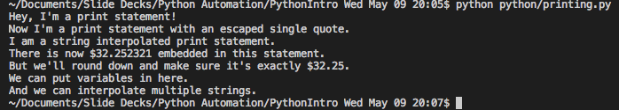
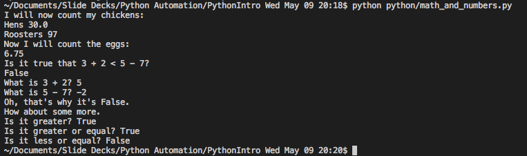

Python is cool...but what can we do with it really?
Use cases
Python can be used to automate...
web scraping,data gathering,texting, emailing, news summarizing, data classifying, and the list goes on and on!
Print Statements (Python 3.6)
```
# comments are denoted by a hashtag, or a pound symbol, or whatever you want to call it
print("Hey, I'm a print statement!") # comments can be inline as well
print('Now I\'m a print statement with an escaped single quote.')
print("I am a %s print statement." % "string interpolated")
print("There is now $%f embedded in this statement." % 32.2523213)
print("But we'll round down and make sure it's exactly $%.2f." % 32.2500000)
variables = "variables"
print("We can put %s in here." % variables)
print("And we can %s %s %s." % ("interpolate", "multiple", "strings"))
```
Results

Math and Numbers
```
# shamelessly stolen from Learn Python The Hard Way
# will rework this later
print("I will now count my chickens:")
print("Hens", 25 + 30 / 6)
print("Roosters", 100 - 25 * 3 % 4)
print("Now I will count the eggs:")
print(3 + 2 + 1 - 5 + 4 % 2 - 1 / 4 + 6)
print("Is it true that 3 + 2 < 5 - 7?")
print(3 + 2 < 5 - 7)
print("What is 3 + 2?", 3 + 2)
print("What is 5 - 7?", 5 - 7)
print("Oh, that's why it's False.")
print("How about some more.")
print("Is it greater?", 5 > -2)
print("Is it greater or equal?", 5 >= -2)
print("Is it less or equal?", 5 <= -2)
```
Results

Print Statements (Python 3.6)
```
# comments are denoted by a hashtag, or a pound symbol, or whatever you want to call it
print("Hey, I'm a print statement!") # comments can be inline as well
print('Now I\'m a print statement with an escaped single quote.')
print("I am a %s print statement." % "string interpolated")
print("There is now $%f embedded in this statement." % 32.2523213)
print("But we'll round down and make sure it's exactly $%.2f." % 32.2500000)
variables = "variables"
print("We can put %s in here." % variables)
print("And we can %s %s %s." % ("interpolate", "multiple", "strings"))
```
Results
Real World Examples!
Article Summarizer
```
# -*- coding: utf-8 -*-
# below are the commands I had to run in my Terminal to get this program to work
'''
pip install sumy
python -c "import nltk; nltk.download('punkt')"
'''
from __future__ import absolute_import
from __future__ import division, print_function, unicode_literals
from sumy.parsers.html import HtmlParser
from sumy.parsers.plaintext import PlaintextParser
from sumy.nlp.tokenizers import Tokenizer
from sumy.summarizers.lsa import LsaSummarizer as Summarizer
from sumy.nlp.stemmers import Stemmer
from sumy.utils import get_stop_words
LANGUAGE = "english"
SENTENCES_COUNT = 10
if __name__ == "__main__":
url = "http://money.cnn.com/2018/05/08/news/economy/job-openings-april/index.html"
parser = HtmlParser.from_url(url, Tokenizer(LANGUAGE))
# or for plain text files
# parser = PlaintextParser.from_file("document.txt", Tokenizer(LANGUAGE))
stemmer = Stemmer(LANGUAGE)
summarizer = Summarizer(stemmer)
summarizer.stop_words = get_stop_words(LANGUAGE)
for sentence in summarizer(parser.document, SENTENCES_COUNT):
print(sentence)
```